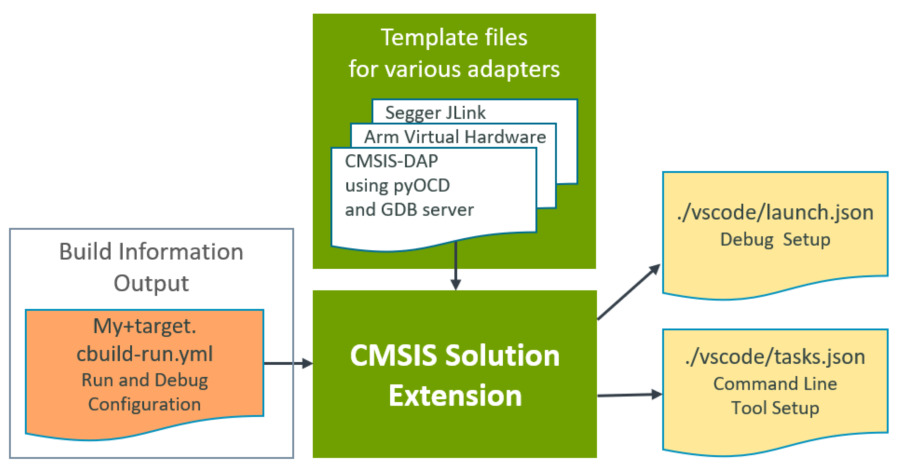
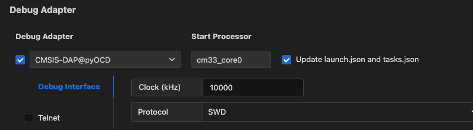
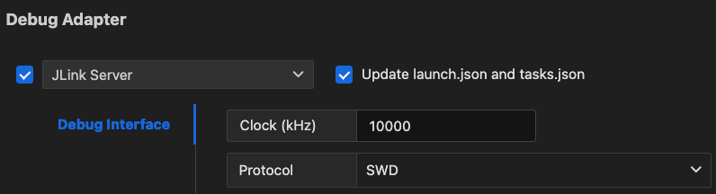
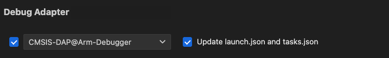
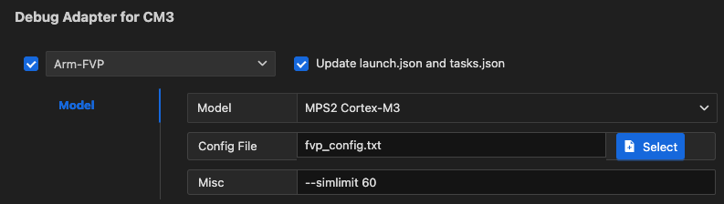

Debug
Debugger User Interface
Many features of the CMSIS Debugger extension are exposed in the Run and Debug view of VS Code.
- Start debugging selects a configuration: launch to start download/debug, attach to connect with a running system.
- Debug Toolbar has buttons for the most common debugging actions that control execution.
- The Trace and Live View shows the LIVE WATCH window.
- Debug Statusbar shows the time spent running the application.
- The Debug Console can be used to interact with the debugger on the command line.

Most editor features are available during debugging. For example, developers can use Find and edit source code to correct program errors.
The Run and Debug view provides:
- VARIABLES section, which includes local function variables and CPU register values.
- WATCH section, which allows viewing user-defined expressions, for example, variable values.
- CALL STACK section that shows active RTOS threads along with the call stack.
- BREAKPOINTS section for managing stop points in application execution to inspect the state.
TIP
Click on a line number badge to navigate to the source code line.
Other debugger specific views or features:
- Live Watch offers run-time viewing of user-defined expressions, for example, variable values.
- Disassembly shows assembly instructions and supports run control, for example with stepping and breakpoints.
- Debug Console lists debug output messages and allows entering expressions or GDB commands.
- Peripherals show the device peripheral registers and allow changing their values.
- Serial Monitor uses serial or TCP communication to interact with application I/O functions
(
printf,getc, etc.). - CPU Time shows execution timing and statistics of the past five breakpoints.
- Multi-Core Debug to view and control several processors in a device.
Debug toolbar
During debugging, the Debug toolbar contains actions to control the flow of the debug session, such as stepping through code, pausing execution, and stopping the debug session.

| Action | Description |
|---|---|
| Continue/Pause | Continue: Resume normal program execution (up to the next breakpoint). Pause: Inspect code executing at the current location. |
| Step Over | Execute the next statement as a single command without inspecting or following its component steps. |
| Step Into | Enter the next statement to follow its execution line-by-line. |
| Step Out | When inside a function, return to the earlier execution context by completing remaining lines of the current method as though it were a single command. |
| Restart | Terminate the current program execution and start debugging again using the current run configuration. |
| Stop/Disconnect | Stop: Terminate the current debug session. Disconnect: Detach debugger from a core without changing the execution status (running/pause). |
| Debug Session | For multi-core devices, the list of active debug sessions and switch between them. |
| Reset Target | Reset the target device. |
VARIABLES
During debugging, you can inspect variables, expressions, and registers in the VARIABLES section of the Run and Debug view or by hovering over a variable or expression in the source code editor. Variable values and expressions are evaluated in the context of the selected stack frame in the CALL STACK section. In the case of multi-core, the content is relative to the active debug session.

To change the value of a variable during the debugging session, right-click on the variable in the VARIABLES section and select Set Value.
You can use the Copy Value action to copy the variable's value, or the Copy as Expression action to copy an expression to access the variable. You can then use this expression in the WATCH section.
To filter variables by their name or value, use the Alt/Opt + Ctrl/Cmd + F keyboard shortcut while the focus is on the VARIABLES section, and type a search term.

WATCH
Variables and expressions can also be evaluated and watched in the WATCH section. You can use the Copy Value action to copy the variable's value, or the Copy as Expression action to copy an expression to access the variable. You can then use this expression in the WATCH section.

CALL STACK
The CALL STACK section shows the function call tree that is currently on the stack. Threads are shown for applications that use an RTOS. Each function call is associated to its location and when source code is available a line number badge is shown. A click on this badge navigates to source file location.
The window content is updated whenever program execution stops.

BREAKPOINTS
A breakpoint pauses the code execution at a specific point, so you can inspect the state of your application at that point. There are several breakpoint types.
Setting breakpoints
To set or unset a breakpoint, click on the editor margin or use F9 on the current line.
- Breakpoints in the editor margin are normally shown as red-filled circles.
- Disabled breakpoints have a filled grey circle.
- When a debugging session starts, breakpoints that can't be registered with the debugger change to a grey hollow circle. The same might happen if the source is edited while a debug session without live-edit support is running.

For more control of breakpoints, use the BREAKPOINTS section that lists and manages all breakpoints.

📝 Note:
You can set breakpoints anytime during your debug session. However, when setting a breakpoint while running an application, the target stops for a short period of time.
Breakpoint types
Apart from the code breakpoint, there are other breakpoint types to satisfy specific use cases.
Function breakpoints
Instead of placing breakpoints directly in source code, a debugger can support creating breakpoints by specifying a function name. This is useful in situations where the source is not available but a function name is known.
To create a function breakpoint, select the + button in the BREAKPOINTS section header and enter the function name. Function breakpoints are shown with a red triangle in the BREAKPOINTS section.
Conditional breakpoints
Set breakpoint conditions based on expressions, hit counts, or a combination of both.
- Expression condition: The breakpoint is hit whenever the expression evaluates to true.
- Hit count: The hit count controls how many times a breakpoint needs to be hit before it interrupts execution.
- Wait for breakpoint: The breakpoint is activated when another breakpoint is hit (triggered breakpoint).
To add a conditional breakpoint:
-
Create a conditional breakpoint
- Right-click in the editor margin and select Add Conditional Breakpoint.
- Use the Add Conditional Breakpoint command in the Command Palette (⇧⌘P).
-
Choose the type of condition you want to set (expression, hit count, or wait for a breakpoint).

To add a condition to an existing breakpoint:
-
Edit an existing breakpoint
- Right-click on the breakpoint in the editor margin and select Edit Breakpoint.
- Select the pencil icon next for an existing breakpoint in the BREAKPOINTS section of the Run and Debug view.
-
Edit the condition (expression, hit count, or wait for breakpoint).
📝 Note:
For checking the the breakpoint condition, the target is halted for a short period of time.
Data breakpoints
Data breakpoints can be set from the context menu of a variable in the WATCH section. The Break on Value Change/Read/Access commands add a data breakpoint that is hit when the value of the underlying variable changes/is read/is accessed. Data breakpoints are shown with a red hexagon in the BREAKPOINTS section and the type of breakpoint is shown (Write/Read/Access).

📝 Note:
When hitting a data breakpoint, the program execution does not stop exactly on that line of code. Depending on the underlying CPU architecture, stopping can be delayed by up to 5 cycles. Use the Call Stack view to determine what caused the execution to stop.
Triggered breakpoints
A triggered breakpoint is type of conditional breakpoint that is enabled once another breakpoint is hit. They can be useful when diagnosing failure cases in code that happen only after a certain precondition.
Triggered breakpoints can be set by right-clicking on the glyph margin, selecting Add Triggered Breakpoint, and then, choose which other breakpoint enables the breakpoint.

Logpoints
A logpoint pauses the program execution for a short period of time, sends a message to the debug console, and then continues with the application. Logpoints can help you save time by not having to add or remove logging statements in your code.
A logpoint is represented by a diamond-shaped icon. Log messages are plain text, but can also include expressions to be
evaluated within curly braces ({}).
To add a logpoint, right-click in the editor left margin and select Add Logpoint, or use the Debug: Add Logpoint... command in the Command Palette (Ctrl/Cmd + Shift + p).

Just like regular breakpoints, logpoints can be enabled or disabled and can also be controlled by a condition and/or hit count.
CPU Time
Most Arm Cortex-M processors (except Cortex-M0/M0+/M23) include a DWT->CYCCNT register that counts CPU states. In combination with the CMSIS variable SystemCoreClock the CMSIS Debugger calculates execution time and displays it along with the selected processor core in the CPU Time Status bar. A click on the CPU Time Status bar opens the related VS Code command palette.
| Command | Description |
|---|---|
| CPU Time | Print CPU execution time and history of past program stops. |
| Reset CPU Time | Reset CPU execution time and history. Set new reference time (zero point). |

📝 Notes:
- The first program stop (typically at function
main) is the initial reference time (zero point).DWT->CYCCNTis a 32-bit register incremented withSystemCoreClockfrequency. The time calculation copes with one overflow between program stops. Multiple overflows between program stops deliver wrong time information.- Each processor in a multi-processor system has and independent
DWT->CYCCNTregister.
Trace and Live view
The Trace and Live View
 (available from the VS Code Activity Bar) currently shows the LIVE WATCH. You can add expressions to this view that
are updated while the application is running on your target.
(available from the VS Code Activity Bar) currently shows the LIVE WATCH. You can add expressions to this view that
are updated while the application is running on your target.
You can add expressions to the LIVE WATCH by:
- Pressing the
+sign and entering an expression. - Using the context menu item Add to Live Watch in the editor or the the Run and Debug view.

PERIPHERALS
The PERIPHERALS view shows the device peripheral registers and allows to change their values. It uses the CMSIS-SVD files that are provided by silicon vendors and distributed as part of the CMSIS Device Family Packs (DFP).

For more information, refer to the Peripheral Inspector GitHub repository.
Memory Inspector
The Memory Inspector provides a powerful and configurable memory viewer that features:
- Configurable Memory Display: Shows memory data with various display options.
- Address Navigation: Easily jump to and scroll through memory addresses.
- Variable Highlights: Colors memory ranges for variables.
- Multiple Memory Formats: Shows memory data on hover in multiple formats.
- Edit Memory: Allows in-place memory editing if the debug adapter supports the WriteMemoryRequest.
- Memory Management: Enables saving and restoring memory data for specific address ranges (Intel Hex format).
- Customized Views: Create and customize as many memory views as you need.
- Lock Views: Keep views static, unaffected by updates from the debug session.
- Periodic Refresh: Automatically refresh the memory data.
- Multiple Debug Sessions: Switch between multiple debug sessions using a dropdown in the memory view.

For more information, refer to the Memory Inspector GitHub repository.
Disassembly
The command Open Disassembly View (available from command palette or context menus) shows the assembler instructions of the program intermixed with the source code. Using this view allows single stepping or managing breakpoints at the CPU instruction level.

📝 Note:
- Enable the VS Code setting Features > Debug > Disassembly View: Show Source Code to show assembler instructions interleaved with source code.
RTOS Views
For RTOS awareness, the RTOS Views extension needs to be added to CS Code. This extension supports a wide range of real-time operating systems, such as FreeRTOS, Zephyr, embOS,and Keil RTX5.

📝 Note:
- This is not a live view. It only gets updated when the program execution is stopped.
- To enable the view, you need to go to the debug view and press Ctrl/Cmd - Shift - P. Select RTOS Views: Toggle RTOS Panel. Afterwards, start your debug session.
- The view is located in the Terminal panel at the bottom and is called XRTOS.
- If it does not show values after entering a debug session and running the application, press Ctrl/Cmd - Shift - P again and select RTOS Views: Refresh.
Debug Console
The Debug Console enables viewing and interacting with the output of your code running in the debugger. Expressions can be evaluated with the Debug Console REPL (Read-Eval-Print Loop) feature.
With the CMSIS Debug extension, you can use the Debug Console REPL to enter
GDB commands while debugging. Before entering
a GDB command, you have to explicitly enter a "greater-than"-character > so that the following strings can be
evaluated as a GDB command.
Debug Console input uses the mode of the active editor, which means that it supports syntax coloring, indentation, auto closing of quotes and other language features.
Example
The following example shows how to check the currently set breakpoints with the > info break command. Afterwards, the
application is run with the > continue command.

Serial Monitor
The Serial Monitor allows users to configure, monitor, and communicate with serial or TCP ports.
Multi-Core Debug
A GDB server provides multiple connections to the processor cores (identified with pname) of a device. The list below shows the output of pyOCD in the DEBUG CONSOLE of VS Code.
0000680 I Target device: MCXN947VDF [cbuild_run]
0001585 I core 0: Cortex-M33 r0p4, pname: cm33_core0 [cbuild_run]
0001585 I core 1: Cortex-M33 r0p4, pname: cm33_core1 [cbuild_run]
0001585 I start-pname: cm33_core0 [cbuild_run]
0001600 I Semihost server started on port 4444 (core 0) [server]
0001636 I GDB server started on port 3333 (core 0) [gdbserver]
0001641 I Semihost server started on port 4445 (core 1) [server]
0001642 I GDB server started on port 3334 (core 1) [gdbserver]
0007560 I Client connected to port 3333! [gdbserver]
The start-pname indicates the processor that starts first and boots the system. A debug launch command connects to this processor. Use a debug attach command to connect to processors that are running. The picture below highlights the parts of the user interface that interact with processors.
- Select a processor and Start Debug. This connects the debugger.
- Select a Processor in the debug toolbar, or
- Click in CALL STACK on a thread or function name to select a processor.
- The selected processor is also shown in the CPU Time Status bar. This processor context is used in the VARIABLES and WATCH view.

📝 Notes:
- The SEGGER JLink GDB server uses a launch command to connect to a running processor whereas other GDB servers use an attach command.
- A Disassembly View opens only for a selected processor; otherwise the command is shown as disabled.
Configure run and debug
In VS Code, you can integrate external tools via a tasks.json file. The debug configuration is managed via the
launch.json file. Both files are generated automatically based on your *.csolution.yml file:

When creating a Target Set in the Manage Solution view and selecting a
Debug Adapter, the information is stored in the target-set: node in the *.csolution.yml file (refer to the
CMSIS-Toolbox user's guide for
details on target-set).
When you save the target set, the CMSIS Solution extension calls cbuild setup that generates the
*.cbuild-run.yml file which contains the run and debug description of your solution. Using template files for the
various debug adapters from the Debug Adapter Registry and
taking the user inputs into account, the CMSIS Solution extension then generates the launch.json and tasks.json
files.
Debug adapter support
Keil Studio support various debug adapters and and GDB server implementations from different vendors:
- Most of the debug adapters (including ST-Link) are served by pyOCD using the Arm CMSIS Debugger extension.
- Segger J-Link Server is supported.
- Arm Debugger is supported.
- Running on Arm FVPs is possible.
- Arm Keil µVision is supported (only on Windows).
Use debug adapters
If you are using a third-party debug adapter, make sure that the latest drivers are installed on your machine and that
the debug adapters are running the latest firmware. Set the PATH variable correctly.
| Debug Adapter | Notes |
|---|---|
| Arm ULINKplus | Make sure that the V2.x.x firmware is installed. |
| Infineon KitProg3 | Make sure that the latest firmware is installed. |
| Microchip PICKit Basic | Use the Python utility pycmsisdapswitcher to switch the firmware to a CMSIS-DAP v2 implementation. |
| Nuvoton NuLink | Make sure that the latest firmware is installed. |
| NXP MCU-Link | Make sure that the latest firmware is installed. |
| Raspberrry Pi Debugprobe | Make sure that the latest firmware is installed. |
| SEGGER J-Link | For J-Link support, visit J-Link/J-Trace Downloads. Set the PATH variable to the bin directory of the installation. |
| STMicroelectronics ST-Link | For ST-LINK/V2 and ST-LINK/V2-1 support on Windows, download the USB driver here: STSW-LINK009. |
In the CMSIS view, open the Manage Solution dialog and go to the Debug Adapter section. Select one of the debug adapters. Once selected, the following JSON files are created automatically:
- In the
launch.jsonfile,attachandlaunchconfigurations are added that let you attach the debug adapter to an already running GDB instance (for example when you have issued aload and runbefore) or launch a new debug session. - In the
tasks.jsonfile, the tasksCMSIS Erase,CMSIS Load, andCMSIS Runare created.
Note
If you wish to preserve manual modification to the JSON files, uncheck "Update launch.json and tasks.json" in the Debug Adapter for ... section.
Selecting a specific debug adapter
Todo
Explain how to select a probe in case multiple are connected.
pyOCD
In the Manage Solution dialog, select the one of the debug adapters named xyz@pyOCD:
- Set the maximum clock speed.
- Select the debug protocol (
SWDorJTAG). - Enable or disable the use of Telnet for semihosting.

JLink Server
In the Manage Solution dialog:
- Select the JLink Server debug adapter.
- Set the maximum clock speed.
- Select the debug protocol (
SWDorJTAG). - Enable or disable the use of Telnet for semihosting.

Arm Debugger
You can use the Arm Debugger with Keil Studio.
Prerequisites
Before you can launch a debug session using Arm Debugger, you need to:
- Install the Arm Debugger VS Code extension.
- Add the Arm Debugger to your
vcpkg-configuration.jsonfile, for example:
"arm:debuggers/arm/armdbg": "6.6.0"
Setup for Arm Debugger
In the Manage Solution dialog, select the one of the debug adapters named xyz@Arm-Debugger.

Arm FVPs
In the Manage Solution dialog:
- Select the Arm-FVP debug adapter
- Select the model you wish to use
- Point to your configuration file
- If you wish to set a simulation limit, add this in the Misc box:

Keil uVision
In the Manage Solution dialog:
- Select the Keil uVision debug adapter.
- Set the path to the
UV4.exefile (the default is%LOCALAPPDATA%\Keil_v5\UV4\UV4.exe). - This setting is saved in the
*.csolution.ymlfile.

Attention
This only works on a Windows PC.
Changing the default for the current workspace
If you wish to change the default path to µVision for your current workspace, you need to create the following entry
in your .vscode/settings.json file:
{
"cmsis-csolution.debug-adapters": {
"Keil uVision": {
"uv4": "/path/to/UV4.exe"
}
}
}
Attention
If you use "Initialize Git repository" when creating a csolution, this file is ignored by default.
Changing the default for a user
If you wish to set the µVision path for your user, open the global settings.json file:
- Press Ctrl/Cmd + Shift + p and type
settings. - Select Preferences: Open User Settings (JSON). This opens the global
settings.jsonfile. - Enter the path as shown above and save the file.
Enhancing the debug experience
To ensure the best debug experience with Arm Compiler for Embedded, make sure that your CMSIS solution files contain the following.
csolution.yml
In the *.csolution.yml file, insert the following block in - target-types\- type section:
target-set:
- set:
debugger:
name: # set to name of your debug adapter
Insert the following before the - projects section:
misc:
- for-compiler: AC6
C-CPP:
- -gdwarf-5
ASM:
- -gdwarf-5
cproject.yml
In the *.cproject.yml file, add at the end:
output:
type:
- elf
- hex
- map